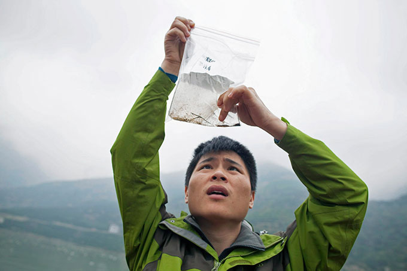

坝
一个大坝如同一个放大器，会把原本分散在河流各处的风险集中到一处，从支流到干流，风险将逐级放大。这是一种系统性的风险。
蓄水
2014年长江汛期平淡无奇。从6月份到8月份，长江上游来水偏枯，直到8月24日，三峡水库才第一次出现了超过4万立方米每秒的入库流量。为此，8月13日，三峡公司调度中心与湖北省气象局举行了一场气象会商。双方商讨了长江中上游夏季降雨情况，气象部门最后向客户建议，为了减轻后期蓄水压力，应该提前2014年的蓄水时间。
这场会商8天后，距离三峡工程直线距离700公里外，位于金沙江下游的溪洛渡水库开始了二期蓄水。这座中国最大的水电站已经做好了准备，要在2014年冲击600米蓄水目标。随着溪洛渡的坝前水位不断上升，三峡水库的坝前水位也随之上涨。这种你追我赶的蓄水竞赛在互联网上引起了小范围的注意。关注三峡工程的网络论坛上，有人逐日列出了三峡水库8月11日20点以来坝前水位的数据。这些数据汇成了一条不断上扬的水位线。从这条线来看，为了对冲溪洛渡水库蓄水对三峡水库入库流量的影响，三峡水库正在提前蓄水。
2014年，中国首次尝试对长江上游的梯级水库群进行联合调度，目的就是协调长江和金沙江上越来越多的水库同时蓄水时可能产生的矛盾。2014年8月27日，三峡枢纽梯级调度中心负责人承认，溪洛渡蓄水时间和三峡蓄水时间部分重叠，但这位负责人否认三峡水库将提前蓄水，并称根据国家防汛抗旱总指挥部的批复，三峡水库从9月10日才开始蓄水。
但三峡水库的坝前水位却一直上升。8月31日20时，水位上升至157.97米。这个数字远远超过了当日的预定水位。根据国家防总的批复，6月10日至8月31日间，三峡水库的水位应该低于146.5米，以保证三峡水库有足够库容发挥防洪功能。
2014年8月底到9月初，三峡库区出现大规模强降雨，导致多个县市发生地质灾害。长江一改之前来水偏枯的态势，入库流量激增，并于9月2日迎来了每秒49000立方米每秒的汛期最大洪水。三峡大坝加大了下泄流量。由于前期水位远超历史同期水平，加大下泻流量没有降低三峡水库的水位。到9月10日夜间八点，三峡坝前水位已经升至162.62米，高出原定控制水位7.62米，为历年同期最高水位。
由于这轮降雨，三峡工程调度中心宣布，2014年蓄水时间推迟到9月15日。
2014年9月15日，三峡水库坝前水位达到165.42米，比2009年的起蓄水位146.93米足足高了18米多。
由于汛期洪水含沙量更高，自2008年以来，三峡水库的起蓄水位一直定在155米以下，以防止汛期拦截过多洪水，导致泥沙在大坝前大量沉积。但在2008年和2009年冲击175米蓄水位失败后，蓄水时间就开始不断提前，起蓄水位也大幅提高。2010年的蓄水时间比2008年提前了18天，比2009年提前了5天，起蓄水位则高出2009年近16米。得益于这种做法，这一年三峡水库终于完成了蓄水至175米的目标。在接下来的三年中，起蓄水位重又下降到160米以下，直到2014年上升至165.42米的历史高位。
这个史无前例的起蓄水位，反映了三峡水库确保连续五年蓄水至175米的决心，其背后则是世界上最大的水电站不得不面对的调度难题。由于长江上游不断修建水坝，如果气候条件不变，三峡水库来水量将持续减少，蓄水到175米水位的难度也会越来越大。
金沙江上的坝
9月29日，溪洛渡的坝前水位首次成功蓄至600米设计水位。这座中国第二大水电站，是长江及其上游金沙江上第四座落成投产的水电站。前三者分别是葛洲坝、三峡和向家坝。而溪洛渡、向家坝、乌德东和白鹤滩这四座位于金沙江下游的的世界级水电站，构成了世界上最大的梯级电站群。它们首尾相连，总装机容量是三峡电站装机容量的两倍。
在金沙江中游，以位虎跳峡电站为核心，还有8座梯级电站——龙盘（即虎跳峡）、两家人、梨园、阿海、金安桥、龙开口、鲁地拉和观音岩——正在建设之中，总装机容量为2058万千瓦。这些电站选址位于中国西部最壮美的自然景观的核心地带，从规划之初就饱受争议。反对的声音曾使建设进程一度中断，但最终没能阻止这些大型电站上马。
金沙江上游同样是8座梯级电站——岗托、岩比、波罗、叶巴滩、拉哇、巴塘、苏哇龙和昌波，初步规划装机容量898万千瓦。
在金沙江下游的向家坝电站和三峡水库之间，还有因为饱受争议而暂时搁置的小南海电站。小南海电站位于重庆郊区。为了兴建这座电站，中国政府修改了长江上游唯一一处国家级鱼类自然保护区的范围，而这个保护区本来是为了补偿三峡水库对长江鱼类的影响而设立的。
按照装机容量计算，有四座电站跻身世界前十，其中三峡电站排名第一，溪洛渡、白鹤滩和乌东德分列第三、第四和第八位。向家坝排名第十一位。
这些电站的兴建与中国强劲的电力需求有关，特别是它们立项的时候，中国的供电能力和用电需求之间还存在很大的缺口。到2013年年底，中国发电机装机容量已经跃居世界第一，达到12.5亿千瓦，其中水电为2.6亿千瓦。实际上，中国的煤电和核电投资都在下降，风电和太阳能发电规模较小，水电装机容量和发电量的增长都非常可观。减排压力 也是原因之一。这导致中国的能源巨头多年来一直在追逐大型水电项目。
中国是世界上温室气体排放量最大的国家，对全球温室气体排放总量的贡献超过欧洲和美国的总和。水电被看成一种绿色的可再生能源。尽管建设周期较长、施工复杂、一次性投资大，但水电的运行成本较低，回报稳定。在2014年北京APEC会议上，中国和美国政府签署减排协议，承诺到2030年非化石一次性能源要占能源总量的20%。这种国家战略也会影响国有能源企业的决定。
1958年3月29日，毛泽东乘“江峡”号轮船视察长江三峡。
但修建三峡大坝的原因有所不同。中国喜欢把三峡工程的创意追溯到孙中山的《建国大纲》。这意味着三峡工程是中国现代化整体构想的一部分。孙中山认为，修建大坝可以促进长江上游的航运。1940年代，中国政府聘请美国著名水利专家萨凡奇在三峡等地勘探，以研究兴建大坝的可能性。萨凡奇的着眼点主要是利用水力发电，促进中国的工业。1950年代，特别是1954年长江中游发生特大洪水导致数千人死亡的悲剧之后，修建三峡大坝的设想被提交到中华人民共和国的领导人面前，其主要目标已经从航运和发电转移到了防洪。毛泽东对修建三峡大坝非常感兴趣。在1956年写作的一首浪漫主义风格的词作里，毛泽东设想了三峡大坝修成后的景象。但在1990年代之前，反对修建三峡大坝的声音始终占据上风——技术、资金、移民甚至水利部门反复强调的防洪目标，都受到质疑。直到1992年，三峡工程才通过论证，决定在三斗坪建造181米高坝，拦蓄长江来水，并利用水力推动世界上最大的发电机组发电。
三峡修建完成后，长江水利委员会宣布，长江中游的防洪标准提高到可防千年一遇的洪水。
“长江的抗旱标准是多少年一遇？”陈国阶突然问我。
更多的坝
74岁的陈国阶是中国科学院成都分院研究员。从1984年介入三峡问题开始，陈国阶的学术生涯中，有一半时间花在了对三峡工程的研究上。他出人意料的发问令人措手不及。
实际上，长江没有什么抗旱标准。这条生命之河对生命最大的威胁是洪水。1870年、1954年、1981年、1991年和1998年，长江流域都发生了巨大的洪水，造成无法估计的损失，也因此衍生出复杂的防洪标准。洪水占据了绝大部分注意力，人们很少想到，长江中下游地区的旱灾也非常常见。
长江发源于青藏高原，一路汇集众多支流的水量，流经6300多公里，从上海的崇明岛外流入东海。以流量计算，它是世界上第三大河流，仅次于南美洲的亚马逊河和非洲的刚果河。长江的流域面积达到180万平方公里，其间生活着中国30%以上的人口。
干旱与长江水量的年度分布和季节分布不均有关。自然状态下的枯水年份的枯水季节里，就可能发生干旱。水库让情况更加复杂。大坝夏秋季节蓄水，冬春季放水发电，这种调节机制理论上有助于缓解下游的洪水（主要发生在夏秋季）和干旱（主要发生在冬春季）。但据长江水利委员会水资源保护局前局长翁立达测算，如果长江上游的电站水库全部完工投产，水库总库容将达到1930.4亿立方米至2125.8亿立方米，调节库容（大致相当于电站水库在主要蓄水期的蓄水量）为1038亿立方米至1143亿立方米，是长江10月和11月径流量一倍多。要想蓄满水库，就必须提前蓄水。这意味着，一旦发生夏季干旱，下游用水需求与水库蓄水需求就会发生矛盾。
三峡工程建成后，长江流入洞庭湖和鄱阳湖的水量减少，而随着泥沙含量较低的水流冲刷河道，导致湖口地区的河道变深，出湖水量增加。2006年、2009年和2011年，鄱阳湖和洞庭湖湖区发生了大面积干涸。
大坝将导致更多的大坝。长江上的第一座大坝葛洲坝比三峡大坝早兴建20年，从功能上说，却是三峡水库的调节坝，目的是抵消三峡大坝蓄水和放水对长江航运的影响。三峡大坝建成后，在金沙江上修建大坝增加了一个强有力的动机：为三峡水库控沙。库尾淤积是三峡工程在工程技术方面的最大挑战之一。随着金沙江上多座大坝的兴建，这些年长江上游来沙减少了很多。这消弭了三峡总公司的心腹大患，也为建设更多大坝提供了有力支持。
开县调节坝的目的是在三峡水库放水清库时防止周边的支流水位下降过快过多，出现大面积消落带。
位于三峡库区的万州和开县，就分别在三峡水库蓄水前和蓄水后修建了自己的水坝。这些水坝的规模不大，在三峡水库蓄水期间，水闸保持开启状态，水体自由交换，一旦三峡水库水位持续下降，水闸就会关闭，将支流的来水拦截在坝内，形成“水库中的水库”。这些库中库影响了三峡的库容，设计之初受到三峡总公司反对，但万州和开县别无选择。如果不修建反调节水坝，任由库区水位下降，大面积的消落带会造成城区严重的环境问题。
三峡库区由于水位涨跌，导致库岸形成消落带。消落带区域植物由于冲刷和水淹逐渐死亡，导致泥土裸露、水土流失。
另一些更为大胆的建坝计划，将其必要性和紧迫性建立在三峡大坝带来的环境改变上。近年来鄱阳湖饱受冬春季干旱之苦，江西省政府于是提出，要在鄱阳湖口和长江交汇处修建大坝，以抵消长江上游来水减少与河道深切的影响，保证湖区枯水季节的用水需求。这个计划遭到几乎所有环境保护组织的一致反对，江西方面后来修改了设计方案，大坝被水闸替代。
建闸目标是在每年11月到来年3月的枯水季节里，保持湖区水位不低于11米。这个目标水位比鄱阳湖同期多年平均水位高4米多。
尽管规模比万州和开县的“库中库”大得多，但在鄱阳湖建闸的原理与前者并无不同：水闸在汛期开启，令长江水可以流入鄱阳湖，枯水季节到来后，水闸关闭，可以阻断鄱阳湖水流入长江。
许多机构表达了对在鄱阳湖湖口建坝或建水闸的反对，世界自然基金会在声明中，列举了鄱阳湖的重要生态功能：鄱阳湖是中国最大的淡水湖，也是长江中下游仅有的两个大型通江湖泊之一，对维护长江生态意义重大。鄱阳湖是白鹤和东方白鹳等众多候鸟在冬季的主要栖息地，湖区鱼类占长江鱼类种类的三分之一，是淡水鱼类的重要基因库。将近一半的江豚生活在湖区。鄱阳湖的生态湿地于1992年被列入《国际重要湿地名录》，是中国加入“世界生命湖泊网”的唯一代表。

湖北天鹅洲江豚保护中心陈列的江豚幼豚标本。江豚的数量正急剧减少，科学家认为其在自然状态下消失只是时间问题。
无坝方案被看作是维持鄱阳湖生态系统健康的最优选择。他们呼吁，在对鄱阳湖的生态功能进行科学研究及工程建设的环境影响得到充分论证之前，应暂缓工程建设。
长江环境保护已经日渐陷入窘境：白暨豚已经灭绝，长江水质每况愈下，旗舰物种如江豚和中华鲟，很可能会步白暨豚的后尘，其他鱼类的数量也日渐稀少。
“我们打了很多小胜仗，但输掉了大战役”，世界自然基金会长江项目总监雷刚说。
事实上，鄱阳湖干旱的成因复杂。那些明显可见的原因中，既有自然因素，也有人为影响。长江中下游正经历一次长达20年的干旱周期，在这个气象周期结束之前，降雨减少会导致鄱阳湖水位下降。当然，更直接的影响是江西省内五条注入鄱阳湖的大河——赣江、抚河、信江、修水和饶河——上都兴建了大大小小的水电站，上游水库导致来水减少，加上湖区挖沙严重导致湖盆不断降低，两个因素都加剧了鄱阳湖区的干旱。鄱阳湖的水文变化也与三峡大坝有关。三峡水库改变了长江的自然水文。以含沙量为例，由于泥沙沉积在库底，冬春季节，水库表层水体为含沙量低的清水下泄，流速加快，冲刷长江河道，鄱阳湖湖口地区的河道不断下切，导致湖区水位和长江水位落差变大，在枯水季节湖水流入长江，加剧旱情。
2013年11月，江西九江，鄱阳湖蛤蟆石水域干涸的湖床。当年，鄱阳湖提前出现极枯水位。
在湖口建坝（闸）无法从根本上解决这些问题，反而会产生很多新的问题：水质、鱼类多样性、长江江豚栖息地、候鸟栖息地以及长江下游泥沙量。泥沙量变化将一直影响到上海。
系统风险
这些问题包含两个系统性的矛盾，第一个矛盾涉及到鄱阳湖和流入这个大湖的河流之间的关系，第二个矛盾则关系到长江上游和长江中下游之间的关系。这两个矛盾都是由越来越多的水库和大坝引起的。
水库的蓄水和放水活动会互相影响。对这些水库的蓄水和放水活动进行调度，是一件非常困难的事。尽管修建水库的目的是防洪和灌溉，但一旦调度不当，就会适得其反。特别是上游和下游同时处于极端气象条件的时候，水库之间的矛盾就会爆发：上游水库在下游防洪最吃紧的时候泄洪，在下游旱情加剧的时候蓄水。
大坝越多，调度的难度越高，不可控事件的风险就越大。在鄱阳湖口兴建大坝或水闸将汇总和放大这种风险。
“如果五条河同时发水，又不能合理调度，所有的水将汇入鄱阳湖。水闸建成后，鄱阳湖通往长江的出口处最窄可能不足3千米，加上400米的桥墩产生的阻水效应，湖区发生洪水的风险会大大增加”，雷刚说，“鄱阳湖区一旦发生洪水，又会增加长江干流的调度困难”
一个大坝如同一个放大器，会把原本分散在河流各处的风险集中到一处，而支流上的大坝将风险指向干流，干流的风险又指向干流上的大坝；风险将逐级放大。
这是一种系统性的风险。雷刚认为，中国并不具备管理这种风险的能力。原因之一是分布在各地的大坝在设计的时候没有充分考虑整个流域的调度需要，而管理各个大小不一的水库运行的权限，又分散在不同地区的不同利益相关方手上。
以长江干流为例，由于金沙江的汛期早于长江汛期，金沙江上的水库开始蓄水的时候，长江的汛期还没有到来，如果三峡至向家坝之间区域的夏季降雨量较少，三峡水库的上游来水就会大大减少，三峡水库的起蓄时间必然提前——这正是2014年发生的故事，三峡总公司称之为“长江上游水库群联合调度”。
同样的事情将变成常态。如果2009年和2011年长江中下游的干旱气候重演，三峡水库将再次面临艰难的选择：要保证下游地区用水，意味着水库蓄水不但达不到175米的最高水位目标，甚至连2009年的最高水位也达不到。这也意味着损失发电量。如果三峡水库为保证发电而坚持蓄水，又会导致下游旱情加剧。
系统性风险的实质是对水的争夺。长江和金沙江上连绵不断的水库群，导致长江中下游来水持续减少，三峡水库的蓄水时间将不可避免地持续提前。不断增加的调水工程将令形势更加严峻。这些调水工程分布在金沙江、大渡河、汉江、乌江等长江流域的主要支流上，每年将几百亿立方米水量调往其他地区，其中，仅向北京等地供水的南水北调工程，每年就拟从长江流拟调水几百亿立方米（中线每年448亿立方米，东线148亿立方米）。
陈国阶预计，在未来的枯水年份里，长江中下游夏秋季节的旱情可能会更加频繁。而且，随着中下游城市扩张，工业和生活用水持续增加，水库蓄水和城市用水的矛盾还会进一步升级。
由于缺乏全流域管理和协调机构，长江下游特别是上海，将成为争夺战中最大的输家。近年来，位于长江出海口的上海因为上游来水减少，咸潮入侵的时间提前，持续时间变长。咸潮入侵不但影响上海的生活用水和生产用水，还会导致地面沉降。对这座城市里不断刷新高度记录的高楼大厦来说，这是非常不好的消息。
由于大坝阻断泥沙下泄，泥沙沉积在出口海造就陆地的地质进程已经延缓。此进彼退，海水侵蚀还会让已经形成的陆地重新消失。长江流域的污染最终也汇流到长江，流往上海，影响上海的城市供水安全。
上海正呼吁中国成立一个系统的长江流域管理机构，以协调这类系统风险。上海的全国人大代表姚同海说，上海70%的自来水来自长江。目前长江的水质评价中剔除了磷和氮的指标，导致一些名为二类水的水体实际上磷氮超标，上海长时间的咸潮入侵，也与长江水氮氧化物超标有关。在2014年的全国“两会”期间，上海市人大常委会副主任带头签署提交了一份议案。这份议案希望全国人大能通过一部《长江法》，并在此基础上成立长江流域管理委员会，对整个长江流域进行协调管理。这意味着从头建立一个水资源管理系统，以应对越来越多的大坝带来的系统风险。
鱼
人类显然比其他物种更懂得大仲马所说的“等待和希望”。随着时间推进，那些不善于等待的物种已经灭亡，或正走在灭亡的路上。
通往灭绝之路
十几年前，我乘坐轮船在长江安徽段航行的时候，在池州和铜陵一带的江面上经常看到成群的江豚浮出水面呼吸。它们远离船只，在靠近江滩的水中嬉戏，或远远地沿着与轮船航道平行的方向快速前进。随着沿江高速公路网络变得更加密集，长江上不断出现新的桥梁，如今长江下游几乎没有客运轮船，取而代之的是越来越多的货轮。对人类来说，这只是生活方式的小变化，但研究江豚的科学家却发现，江豚的命运因此跨过了一道危险的界线。江豚已经非常少见。在走向灭亡的物种名单上，它们排在非常靠前的位置。
系统已经亮起了红灯。这是另一个系统——生态系统。
生态系统的曝光机会比水资源调度系统多一些，但大多是镶嵌在政府公文或媒体报道中的陈词滥调。对少数有机会深切理解何为何生态系统的人们来说，他们正面对一个前所未有的事实：长江的生态系统正在崩溃。江豚的命运只是这个系统错误的一部分。
2012年，在枯水季节的鄱阳湖，科研人员发现渔民与江豚集中在一小块水域，冲突变得非常触目。他们在一个小时里看到了48条用电打鱼的渔船。在场的长江天鹅洲白鳍豚国家保护区管理站负责人高道斌说，那一年鄱阳湖里的江豚“瘦得像鬼”。 对鱼的争夺只是一方面，渔船的发动机会干扰江豚的声呐系统。渔船如此频密，江豚根本没有时间进食。
江西省政府认为，在湖口建闸，提升枯水季节的水位，有助于改善江豚生存环境，但科学家指出，大闸阻断江湖联系和江豚洄游，可能导致它们的基因交流受阻，江豚种群的遗传多样性可能会进一步降低。
也许不会有人比中科院水生所淡水鲸类专家王丁和他的同事们更懂得什么叫“绝境”。王丁是世界上少数长期研究过白鳍豚的科学家之一。他的研究基地中科院水生所白鳍豚馆在武昌城的一个角落里，不大的院落中间放置了一尊雕像，几只不锈钢白鳍豚欢快地游向天空。这种长江流域特有的淡水鲸类，曾经广泛分布于宜昌到上海之间河湖之中，它们在水里的矫健身姿正如雕塑所示。然而，真实世界里已经没有白鳍豚了。
曾有一条白鳍豚在白鳍豚馆里生活了23年，是王丁及其团队的主要研究对象。它被命名为“淇淇”。“淇淇”是世界上最后一条人工饲养的白鳍豚。在三次为它寻找配偶进行繁殖的尝试失败后，“淇淇”于2002年在孤独中死去。2006年，中美等六个国家的科学家发起联合调查，在长江宜昌至上海段搜寻“淇淇”的同类，结果一无所获。2007年，科学家宣布，长江白鳍豚已经“功能性灭绝”。
中国科学家认为，白鳍豚属于鲸目齿鲸亚目下特有的白鳍豚科，而这些有着深浅不一的灰色皮肤的江豚，属于鲸目齿鲸亚目下的鼠海豚科。
白鳍豚馆里如今生活着7条江豚。它们是1995年到2011年间从长江流域捕捞而来的。和其他小型鲸类一样，白鳍豚和江豚似乎都拥有某种激起人类本能的保护欲的特殊能力。白鳍豚馆里的7条江豚显然已经适应了室内人工饲养的环境。到了饲养员前来投食的时间，它们快速而轻盈地游过来靠近池壁，准备进食。碧蓝的池水沿着江豚光滑的流线型身体向后分开，叫声随着它们的游动忽远忽近。
自从告别了在长江上乘船旅行的生活，这是我第一次看到江豚。除了金鱼，我还从没有如此近距离地观察过一种生活在水下的动物。只要行动轻缓，不要高声喧哗，江豚似乎很容易适应人类的存在。它们的好奇心非常旺盛。很快，几条年轻的江豚开始轮流快速靠近我脚下的池壁，然后加速游开。后来我们进入地下室，那里位于池底，有几个巨大的玻璃窗。江豚发现了我们的行踪，纷纷潜入池底，游到玻璃窗前，在那里停留片刻。我意识到它们在用突出的吻部触碰另一侧的玻璃。
它们已经学会了用眼睛和人类交流。在自然状态下，由于江水浑浊，江豚运用眼睛的机会不多，它们主要利用完备的声呐系统理解环境。人工喂养一段时间后，江豚的眼神不再像刚来到的时候那样呆滞。这给人类一种错觉，以为江豚和人类一样拥有高度发达的智力，并且能够和人类进行情感交流。
“这只是人类经验和情感的投射”，中科院水生所的郝玉江博士解释说，“的确，江豚非常注意人类的行为，能够及时做出反馈，但这种机制和一般宠物并没有什么区别。”
但圈养状态下人类和江豚之间微妙而亲切的情感，无法延续到野外，那里的生存法则要残酷得多。根据2012年调查的结果，长江江豚的种群数量大概仅有1000头左右，其中长江干流仅余500头左右，干流江豚数量每年的下降速度达到13.7%。如果按目前的下降速度，它们将在10年内从长江干流中消失。
可能导致江豚种群衰退的原因很多，根本原因是各种人类活动对长江生态环境的破坏。江豚是长江的旗舰物种，也是长江健康状况的最重要的指示生物。
有些科学家认为，白鳍豚灭亡之前，已经在地球上生存了2200万年。在这段漫长历史的绝大多数时间里，江豚是长江里的顶级捕食者。江豚进食量大，代谢快。郝玉江说，“食物资源的减少是造成江豚种群快速减少的一个重要因素。”
在人工喂养环境下，夏季每天进食3公斤小鱼，冬天要3.5到4公斤，平均进食量占体重的10%。近年来鱼类资源的快速枯竭减少了它们的食物来源。
生与死的分界线
整个长江共有400种鱼类，350种为淡水鱼类，其中156种为长江特有鱼类，绝大多数分布于长江上游。历史上曾在金沙江监测到143种鱼类，2013年的一次调查只发现了其中17种。长江淡水鱼以鲤科为主，其中包括被中国人普遍养殖的“四大家鱼”（青鱼、草鱼、鲢鱼和鳙鱼）。1960年代，“四大家鱼”在长江上有36个产卵场，每年鱼苗径流量有1000亿尾左右，宜昌江段的产卵场规模最大，鱼卵数量数十亿枚，占总数的5%到7%左右。曹文宣院士在2011年的一次演讲中提到，如今这里每年仅有几千万枚鱼卵。
鱼卵在水中漂流发育，鱼卵和一部分孵化后的鱼苗顺流而下，漂流至长江中游，在较缓的水流中逐渐长成成鱼，完成生命周期。2003年三峡水库坝前水位达到139米之后，泄流槽成了上游鱼苗通往长江中下游的鬼门关。湍急的水流中氮气过饱和，鱼苗至此大量死亡。2008年，坝前水位达到156米，3.16亿尾鱼苗通过大坝下泄，生存下来的只有2%。对鱼而言，长江已经被分割成两段。
这个过程从1971年开始修建葛洲坝就开始了。尽管葛洲坝是一座低水头的径流式电站，而非三峡工程那样的高坝，但对有些鱼类而言，这仍然是生与死的分界线。
10月下旬，我们在武汉看到危起伟的时候，这位世界上最知名的中华鲟研究专家正在和同事开会，讨论监测2014年中华鲟产卵情况的计划。不久前，危起伟公布了一条悲伤的消息：2013年没有发现中华鲟 在自然环境下产卵。
中华鲟，这种一亿五千万年前遗存至今的古老鱼类，是世界上最大的淡水鱼类，传统产卵场位于金沙江。每年10月，中华鲟幼鱼孵出后沿江而下，在长江生活10个月左右，第二年8月进海洋，性成熟后再返回长江和金沙江进行繁殖，在那里生活18个月左右，直到完成产卵。历史上在重庆至雷波之间观测到16个中华鲟的产卵场。这些产卵场分布在600公里长的河道里。
葛洲坝建成后，因为无法逾越大坝洄游至金沙江，中华鲟在长江里的活动范围缩短了1000公里。
危起伟说，这种减少对中华鲟的影响至今没有弄清楚，尽管这种古老的鱼类对新环境表现出了巨大的适应能力。中华鲟在葛洲坝下开辟了新的产卵场，但由于长江古老背以下河道缺乏硬质河床，中华鲟只能在葛洲坝下5公里的河段里开辟两个新的产卵点。鱼多的年份，产卵点的鱼卵堆积如山，大量鱼卵被其他鱼吃掉了。
如今洄游到长江产卵的中华鲟，都是葛洲坝建成后出生的，“数量比以前少得太多”，危起伟又补充说，“少了两个量级。”
1980年代，科学家每年可以观测到2000尾左右成鱼洄游，2000年以后这一数字减至200多尾，2011年只观测到100尾左右。2013年是一个明确的转折点。尽管研究者在2014年年初已经初步得出结论，2013年未见中华鲟在自然环境下产卵，但危起伟还不死心，他组织研究团队，沿江走访渔民，直到坏消息被确认。
中华鲟未能如期产卵的原因可能是三峡水库的存在导致产卵场的水温过高。水库蓄水导致水温分层现象：上层水体受太阳照射温度较高，下层水体因上层水体隔热效应温度较低。
随着水库水位下降，温度较高的上层湖水先行下泄，导致坝下河道的秋冬季水温高于自然状态，影响鱼类秋冬季节的产卵活动，温度较低的深层湖水后下泄，又导致河道春季水温低于自然状态，影响鱼类春季的产卵活动。
三峡水库的蓄水时间不断提前，中华鲟产卵的时间则不断推后。2013年之前，由于水温达不到条件，中华鲟产卵时间已经从10月中旬推迟到了11月中旬。2013年偏热的天气似乎成了最后一根稻草，产卵期水温比常年高出了好几度。
4月12日，隶属于三峡集团的中华鲟研究所在向长江放流了3000尾中华鲟。在它们1700公里的长江游过程中，水污染、繁忙的航运、鱼网拦截都可能使这个过程戛然而止。过去30年，该所累计放流57次约500万尾中华鲟，绝大部分无法到达长江口。新华社 图
由于大多数中华鲟成鱼生活在海里，只要中华鲟能够在2014年或2015年恢复产卵，这个种群就会延续下去。2015年，人们的确在长江口发现了野生中华鲟鱼苗。但和江豚研究者说起江豚一样，危起伟对中华鲟的命运感到非常悲观：“情况恶化到今天，不可逆转，只能加剧”。
尽管中华鲟努力适应新的系统，但新系统并不稳定。中华鲟保护区的范围不断缩小，葛洲坝下不断增建各种工程，破坏了新的产卵场地。中华鲟的出生畸形率在上升，雄鱼数量锐减，精子活性下降。和江豚的遭遇一样，误捕也许会给数量急剧减少的中华鲟带来巨大的种群风险。
为了让鱼类休养生息，也为了给高级猎食者如江豚和中华鲟保留食物，并防止误捕，鱼类学家呼吁在长江干流实施为期10年的禁捕，而中科院水生所的生态学家蔡庆华说，长江干流应该永久禁捕。
“保住了大熊猫，意味着大熊猫生存的环境也保住了，生物链就保住了”，蔡庆华使用了一个比喻，“和大熊猫一样，鱼也是其所在的生物链上的旗舰物种。”
导致鱼类减少的原因也正是导致江豚趋于灭绝的原因：水污染、栖息地丧失和过度捕捞，其中水污染包括农业污染和工矿业污染，导致栖息地丧失的原因主要是围湖造田、水电工程、桥梁和码头的建设、江湖阻隔、采砂以及航运。
在这些纷繁复杂的原因中，通过禁渔解决过度捕捞的问题是最容易做到的，因为长江干流上的渔民数量在不断减少，沿江各省的渔民总数加起来不超过15万人。如今，在长江上捕鱼的投入越来越大，但收获仍然越来越少。蔡庆华认为，通过提供经济补偿让渔民退出捕鱼，成本不高，但可以获得极高的生态收益。
水
水体富营养化的成因有工农业污染、生活垃圾，以及蓄水后新出现的水流变缓、土壤养分析出等。要从根本上解决这些问题，需要整个系统的转换。
逆流而上
1984年，陈国阶从美国访学归来，开始研究三峡工程的移民问题。同一年，蔡庆华从武汉大学数学系毕业，被分配到和武汉大学一墙之隔的中科院水生所工作。
时任水生所所长伍献文是著名鱼类学家。伍献文为新进员工进行所史教育时，从一个苦涩的故事开始了自己的讲述。1972年修建葛洲坝时，各方为是否需要修建鱼道争执不下，最终决定不修，以节省3000万元投资。大型水利工程对鱼类和生态环境的漠视，给鱼类学家和生态学家造成了长久和巨大的心理创伤，也加剧了工程学界和生态学界的观念分歧。
对蔡庆华来说，他至此才明白，葛洲坝工程是为三峡工程做准备的。1990年代后期，他作为新一代的生态学者接触三峡问题，也是从研究移民开始的。和1980年代前期不同，这时候的问题不是移不移，也不是怎么移，而是移民能不能稳得住。科学家奉命想办法让移民富起来。蔡庆华的任务是教宜昌县移民示范区的移民养鱼。
“养鱼很简单”，蔡庆华说，“但鱼一养起来，水体就会出问题。”
这在预料之中。三峡工程建成后，三峡将变成世界上最大的河流型水库。在此基础上会演化出一个新的系统。这个系统包含湖泊、河流和陆地，气候变化和人的行为将不断地对系统造成扰动。养鱼会加剧水体富营养化。生态学家最担心的事情之一是库区会爆发大范围水华。
有时候历史自己会说话。从武汉乘船经过葛洲坝去宜昌，一过船闸就是长江支流黄柏河。由于流水环境变成相对静水环境，这条被葛洲坝工程堵塞和托举的河流又黑又臭。三峡的堵水效应和葛洲坝不是一个量级，蔡庆华想，库区支流的命运会怎样？那里的生态系统会有什么变化？
1999年，蔡庆华利用移民研究的机会，开始对香溪河进行调查。正如黄柏河之于葛洲坝，香溪河是三峡大坝上游第一条主要支流。它发源于神农架，流经湖北兴山县和秭归县，在秭归香溪镇注入长江。香溪河全长97.3公里，流域面积3099平方公里，是三峡库区8条流域面积超过3000平方公里的支流之一。每年春天，桃花盛开的季节粉红色的淡水水母会出现在香溪河口，它们如同一张一翕的小伞，悬浮在水中，又像飘落在水中的桃花花瓣。蔡庆华担心，随着三峡工程建成，三峡水库蓄水，这条河的遭遇很可能和黄柏河一样。
三峡水库蓄水到175米之后，香溪河将成为库区一部分，回水区最远达到距离河口40公里处。如果要观察大坝蓄水对支流生态系统的影响，这条河的位置很理想。它够大，是三峡湖北库区最大的支流，也够复杂，从源头到河口的海拔高差超过3千米，生态多样。
 蔡庆华的团队对香溪河的观测已经超过15年，这是中国同类观测中时间最长的一个，但要理解河流生态，这还远远不够。
1999年开始的早期采样包括浮游生物、水草、底栖动物、动物和植物等方面的数据，3年后，中科院在蔡庆华工作的基础上成立了系统与流域生态学实验室。采样周期不断缩短，从季采和月采变成年采、季采、月采、周采和日采结合。这个实验室和其他两个实验室合作，把研究拓展至水体环境、水动力学和沉积物等领域。
2003年，水华如期爆发暴发。三峡地区春天的温度、光照和养分条件都适合水华生长，只是长江急速的水流使浮游生物无法聚集。水库蓄水后，水流变缓，土壤中的养分析出，利于水华发生。从这一年起，桃花水母消失了。第二年春天，也即蓄水至139米之后，水库回水从香溪河口延伸至上游23公里处，库湾和香溪河里的水华已经非常严重。
这一时期爆发暴发的呈酱油色的水华属于无毒的假藻水华。蔡庆华认为，如果三峡水库的水位每天下降20到30厘米，就可以有效减少这种浮游生物的大面积繁殖。他在香溪河的实验证明这个方案是有效的。但三峡公司内部的专家怀疑香溪河的经验能否在水库复制。2007年，假藻水华更为严重，三峡公司开始在葛洲坝试验蔡庆华的方案。2008年，水华大面积暴发。据环保部监测，11条河流上共发生13处水华。有毒蓝藻从香溪河口向上游延伸，一直到距离河口24公里的硖口镇。那里是蔡庆华的实验室所在地。
2014年10月19日，长江支流香溪河部分水域出现水华。
2009年，三峡水库冲击蓄水至175米失败，2010年卷土重来，终于获得成功。水华继续暴爆发，但规模并没有扩大，随后严重程度开始下降。在蔡庆华方案的基础上调整而成的人工潮汐方案随后出现。这种方案要求更加复杂的调度方式。白天藻类光合作用活跃的时候，增加下泄流量，加大支流和库区的水体交换，增加对藻类繁殖的扰动，夜晚则减少下泄流量，弥补蓄水损失。据多份相关论文测算，坝前水位降低50厘米，香溪河、大宁河和乌江河口的水位也会有明显变化，可以有效抑制水华繁殖生长。
正如江豚走向灭绝是一个系统事件，水华爆发也是一个系统事件。造成水体富营养化的因素包括工业污染、农业污染和生活垃圾，以及三峡水库蓄水后出现的新的因素：水流变缓、土壤养分析出，等等。要从根本上解决这些问题，需要整个系统的转换，而科学家却只能从最容易操作的角度提出自己的建议：禁渔或是制造人工潮汐。
理解系统
为了理解这个系统，蔡庆华、他的同事和学生们已经进行了连续15年的观测和记录。每天三次，他们驾驶着一只铁皮小船，到位于河弯处里的取样点采集水样、记录数据，乘面包车或渔船在另一些采样点进行每周、每个月、每个季度或每年一次的采样。这些采样点分布在神农架幽暗的森林和水电站林立鳞次栉比的香溪河上，分布在钢筋水泥的公路桥梁和古老的、晃悠悠的吊桥下，分布在垃圾遍地的城镇旁边，并从那里向香溪河汇入长江的河口地区延伸，一直延伸到距离三峡大坝所在的三斗坪只有一公里远的水库湖面上。
从香溪河口至库尾50多公里，分布着20多个取样点。一次例行的月采，每一处采样点，取3个断面采集藻类，5个断面采集动物。他们掀起石头，小心翼翼地用一个圆形瓶盖扣住底栖生物附着的地方，刷掉其他部分，然后把瓶盖下的部分刷进水盆，统计其形态和数量。或是用索伯网采集水底底栖生物。这需要穿着橡胶长裤站到深水中。
工作日复一日，月复一月，年复一年，远远超出任何学术资助的周期。很多开销——比如租用汽车和船只的开销——不符合学术项目的会计要求，成了实验室的财务负担。但15年的观测对了解一条河的生态系统而言还远远不够，尽管这已经是中国科学家对一条河所做的最长时间的监测。
作为水生所历史上最后一名数学系毕业生，老一代鱼类学家和生态学家的本意是希望蔡庆华利用数学工具，为生态学理论建立数学模型。但蔡庆华很快就发现这一设想只是空中楼阁。除了理论问题没有解决，中国也缺少针对水体进行的连续观察和记录。没有数字就无所谓数学模型。
时间也是一条河流。蔡庆华、他的同事和学生们将为后来的学者能够溯流而上留下地标。数据必须积累够久够多，才能有效地帮助人们理解一个流域生态系统。这个系统不但包含了世界上最大的水库和支流的关系，还包括水体和陆地的关系。有一些系统错误已经发生并且无可挽回，比如淡水水母的消失，有一些系统错误发生后有所缓解，比如曾在香溪河和其他三峡水库支流上泛滥成灾的蓝藻。有一些机制，科学家相信有助于预防系统错误的发生，比如把香溪河上的蓝藻监测系统接入三峡水库的调度系统，以及减少香溪河上的水电站数量，或至少改变这些电站的工作方式，不要让河流断流，以修复这里的生态系统，特别是让鱼类重新回到香溪河中。但要让这些设想中的机制成为现实，需要调动另一个系统——那个驱动政治、经济和社会事务运作的系统转变，才能实现。